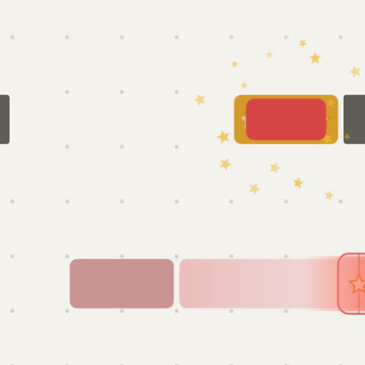
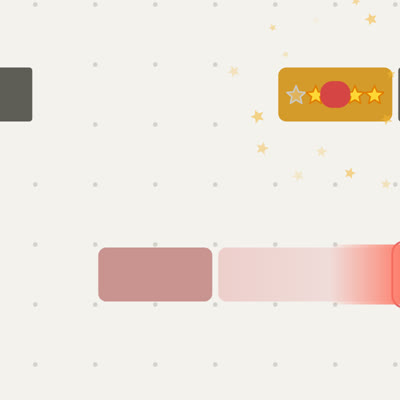
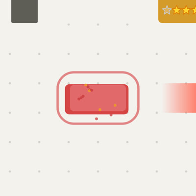
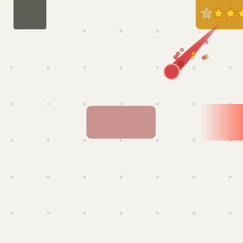
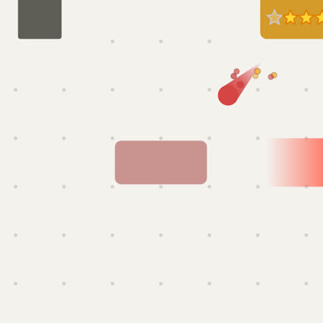
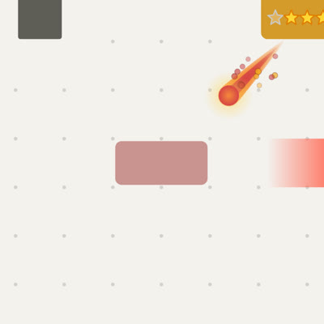

Soul styles
The red block's soul flying from a reached goal to the next red block, filmed in the game (test/experiments/soul-look.mjs): a goal reached on a small board, its finish skipped with a tap, then frame by frame. Every style is in the game behind ?soul=<name>; the game still uses Classic. The red band at the right edge points to the new goal's target, off screen.
What changed since the first round
- The start: the old red block stays red through its finish. As the soul sets off, its red draws in to a ball on its middle (the block gold underneath), and only then flies (first 250 ms).
- No slowing down: it starts slow as before but speeds up all the way, hitting the new block at full speed.
- A harder hit: the new block is knocked the way the soul flew, a splash of red and gold drops goes on past it, a thicker ring goes out, and the block turns red at the hit (muted until then).
- Bigger: the ball is 0.42 of a cell across (was 0.3), centred, with no white middle.
- Sparks you can see: deep red and gold with a dark edge, bigger, scattering off the trail and falling.
- Gold star and Ghost block are gone.
Comet
The long streak you liked, with a shaded red ball instead of the white one.


Ember
A flat red ball, a shorter and thicker ribbon.







More looks, in flight
The same moment of each (800 ms after setting off). All draw in, fly and hit the same way as Comet.

?soul=cometA shaded red ball (lighter towards its middle, no white), a soft red glow, a long streak, sparks.
?soul=emberA flat red ball in a red glow, a short thick ribbon, fewer sparks.

?soul=rimA flat red ball with a thin pink rim, no glow; the comet's streak.

?soul=dropA teardrop: the ball drawn out to a point behind it, longer as it speeds up; no separate trail.

?soul=flameAn orange-to-red ball in a gold glow, an orange streak round a red one, like a meteor.
?soul=beadsA red ball followed by a string of smaller red balls, fading.
?soul=ringA hollow red ring in a glow, with the comet's streak.
?soul=sparkleA four-pointed red glint, turning slowly, with the comet's streak.
?soul=goldA flat red ball ringed in the stars' gold, a medium ribbon.